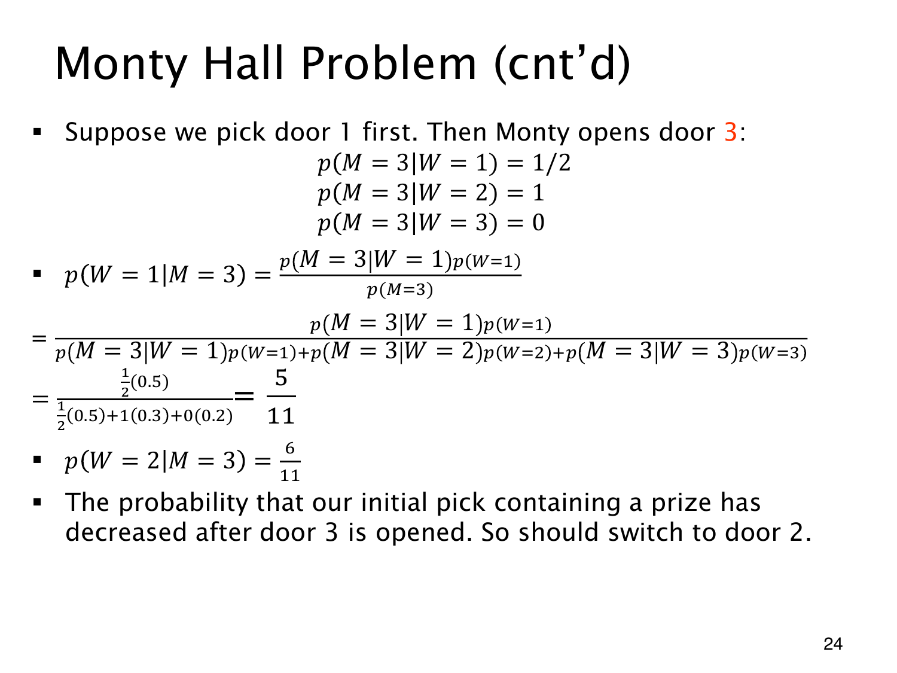

L1.10 · 第 24 页讲解原文
查看这一页课件

观察到开门 3 时换到门 2
沿用先验 (0.5,0.3,0.2)，仍先选门 1。若主持人这次开门 3，似然为
p(M=3∣W=1)=21,p(M=3∣W=2)=1,p(M=3∣W=3)=0.
所以 p(M=3)=0.25+0.3=0.55，剩余两门的后验是
p(W=1∣M=3)=0.550.25=115,p(W=2∣M=3)=0.550.3=116.
此时应换到门 2，因为 6/11>5/11。初选相同，观察到的开门不同，后续动作也不同。
于是先选门 1 的完整策略可以是：开门 2 就留，开门 3 就换。它在游戏开始前的整体胜率为
0.4595+0.55116=0.25+0.30=0.55.
“已经看到具体开门后的条件胜率”先按观察计算；“游戏开始前整个策略的胜率”还要对可能观察加权。上式的两个权重正是开门 2、开门 3 的概率。